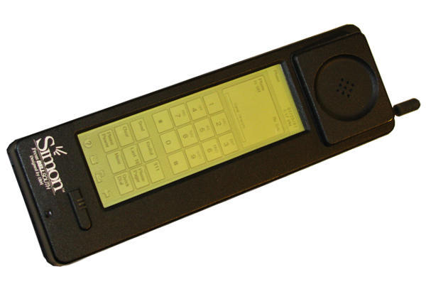
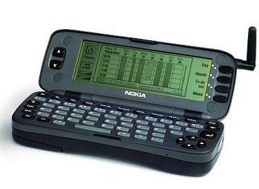
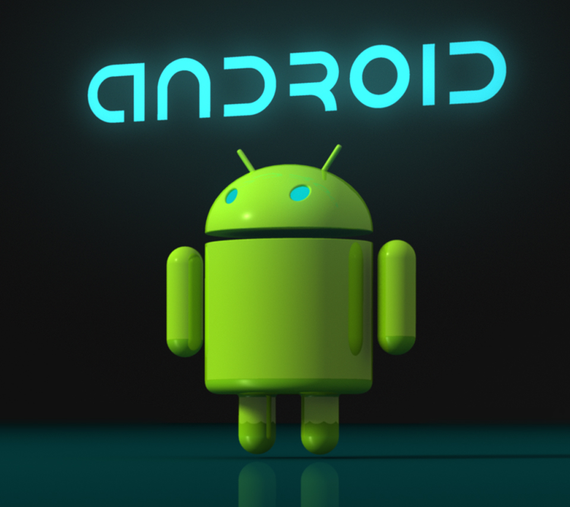
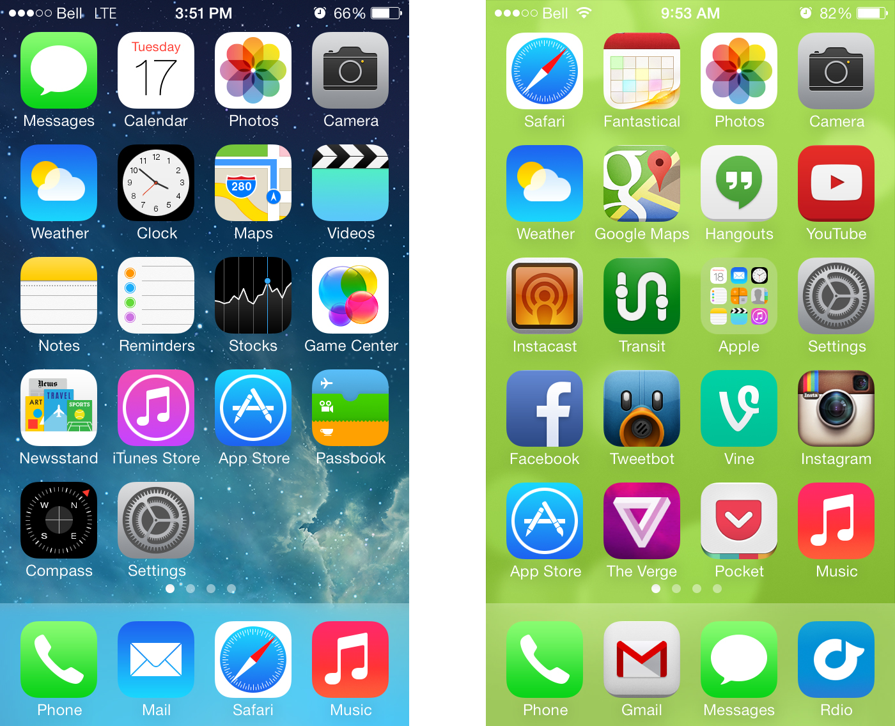
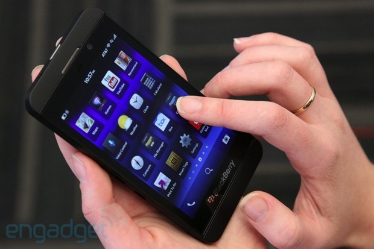
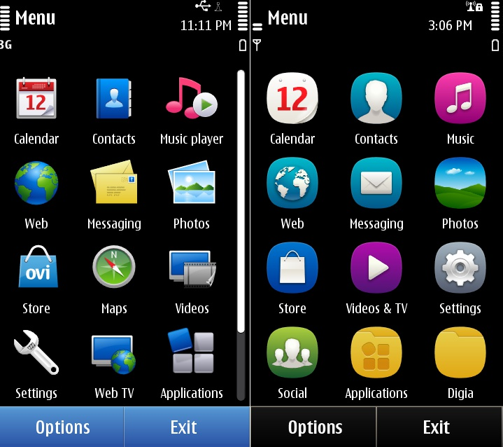
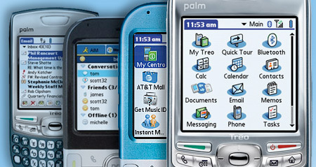
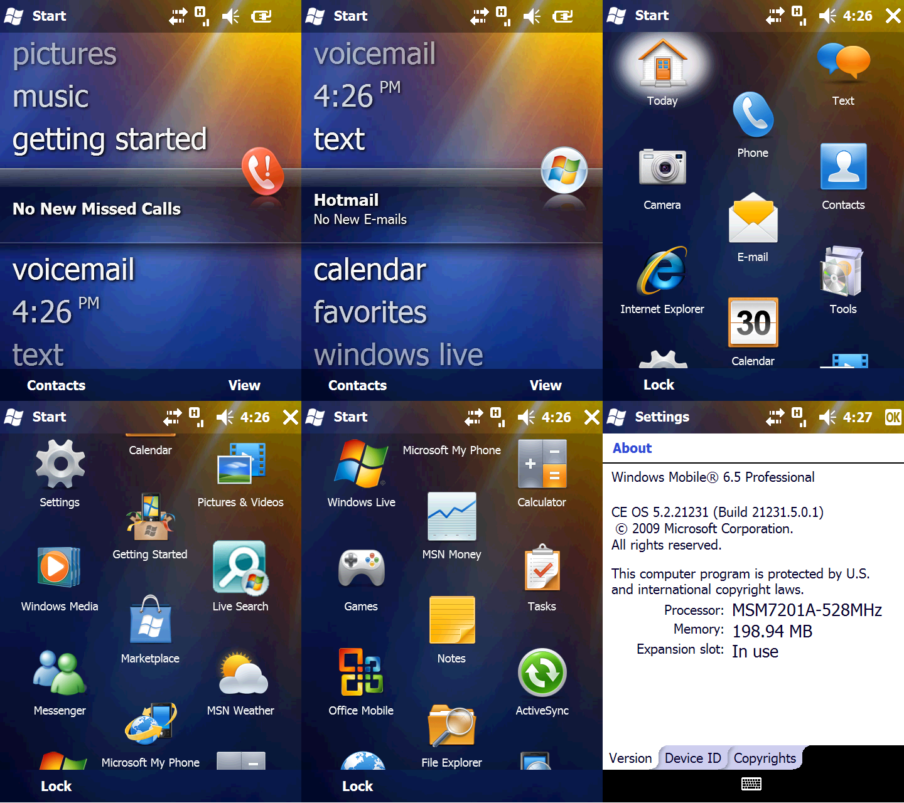

LG G2 review
LG G2 review
| Home | History Of smartphones | Reviews | Best cameraphones | Best android smartphones of 2013 |

Origin of the term

Devices that combined telephony and computing were conceptualized as early as 1973, and were offered for sale beginning in 1994. The term "smartphone", however, did not appear until 1997, when Ericsson described its GS 88 "Penelope" concept as a Smart Phone.
The distinction between smartphones and feature phones can be vague, and there is no official definition for what constitutes the difference between them. One of the most significant differences is that the advanced application programming interfaces (APIs) on smartphones for running third-party applications can allow those applications to have better integration with the phone's OS and hardware than is typical with feature phones. In comparison, feature phones more commonly run on proprietary firmware, with third-party software support through platforms such as Java ME or BREW.An additional complication is that the capabilities found in newer feature phones exceed those of older phones that had once been promoted as smartphones. Some manufacturers and providers use the term "superphone" for their high end phones with unusually large screens and other expensive features. With the advent of devices with larger screens, the term "phablet", a portmanteau of the words phone and tablet, had come into common usage by 2008.
Early years

The first cellular phone to incorporate PDA features was an IBM prototype developed in 1992 and demonstrated that year at the COMDEX computer industry trade show. A refined version of the product was marketed to consumers on 16 August 1994 by BellSouth under the name Simon Personal Communicator. The Simon was the first device that can be properly referred to as a "smartphone", even though that term was not yet coined. In addition to its ability to make and receive cellular phone calls, Simon was also able to send and receive facsimiles, e-mails and pages through its touch screen display. Simon included many applications including an address book, calendar, appointment scheduler, calculator, world time clock, games, electronic note pad, handwritten annotations and standard and predictive touchscreen keyboards.
In 1996, Nokia released the Nokia 9000, part of the Nokia Communicator line, which became their best-selling phone of that time. It was a palmtop computer-style phone combined with a PDA from HP. In early prototypes, the two devices were fixed together via a hinge in what became known as a clamshell design. When opened, the display of 640'200 pixels was on the inside top surface and with a physical QWERTY keyboard on the bottom. Email and text-based web browsing was provided via the GEOS V3.0 operating system.

In the late 1990s though, the vast majority of mobile phones had only basic phone features so many people also carried a separate dedicated PDA device, running early versions of operating systems such as Palm OS, BlackBerry OS or Windows CE/Pocket PC.These operating systems would later evolve into mobile operating systems and power some of the high-end smartphones. In early 2000, the Ericsson R380 was released by Ericsson Mobile Communications, and was the first device marketed as a "smartphone". It combined the functions of a mobile phone and a personal digital assistant (PDA), supported limited web browsing with a resistive touchscreen utilizing a stylus.
In early 2001, Palm, Inc. introduced the Kyocera 6035. This device combined a PDA with a mobile phone and operated on the Verizon Wireless network. It also supported limited web browsing. The device was not adopted widely outside North America.
Between 2002 and 2004 HTC gained much popularity in Europe with their "Wallaby", "Falcon" and "Himalaya" models running the Windows Mobile "Pocket PC" Operating System.
In 2004, HP released the iPaq h6315, a device that combined their previous PDA, the HP 2215 with cellular capability.
2010 onward
In the wake of controversy regarding the sourcing of materials and smartphone manufacturing process, the Fairphone company launched its first "socially ethical" smartphone at the London Design Festival in 2013. The company places an emphasis on changing the manner in which supply chains and commercial strategies work, and the first shipment of Fairphone handsets will occur in December 2013.
The QSAlpha commenced production of the Quasar IV'a smartphone designed entirely around security, encryption and identity protection'in partnership with a large consumer electronics OEMS manufacturer in late 2013. The handset uses specialized technology to safely protect all incoming and outgoing communications, and is targeted at customers who require incredibly high levels of security and encryption.
The world's first curved-OLED technology smartphones was introduced to the retail market in December 2013, with the sale of the Samsung Galaxy Round and LG G Flex models. The Touch Display Research predicts that curved and flexible displays could account for 16 percent of the display market by 2023, but the high manufacturing cost of the technology means that such handsets only represent 1 percent of the market in 2013 (as of December 16, 2013, the Galaxy Round model costs A$1,000 for consumers in South Korea). Due to production costs, a relatively high failure rate, a short lifespan, and the absence of a foldable battery, foldable OLED smartphones may not be produced until 2023.
Operating systems
Android

Android is an open-source platform founded in October 2003 by Andy Rubin and backed by Google, along with major hardware and software developers (such as Intel, HTC, ARM, Motorola and Samsung, to name a few), that form the Open Handset Alliance. The first phone to use Android was released in October 2008. It was called the HTC Dream and was branded for distribution by T-Mobile as the G1. The software suite included on the phone consists of integration with Google's proprietary applications, such as Maps, Calendar, and Gmail, and a full HTML web browser. Android supports the execution of native applications and a preemptive multitasking capability (in the form of services). Third-party free and paid apps are available via Google Play, which launched in October 2008 as Android Market.
In January 2010, Google launched the Nexus One smartphone using its Android OS. Android has multi-touch abilities, but Google initially removed that feature from the Nexus One, but it was added through a firmware update on February 2, 2010. By Q4 2010, Android became the best selling smartphone platform after massive gains throughout the year.
On June 24, 2011, HTC Corporation released the HTC EVO 3D, a smartphone that can produce stereoscopic 3D effects and take 3D stereoscopic photos for viewing on its screen. Samsung Galaxy S III sales hit 18 million in the third quarter of 2012. On November 13, 2012 Google and LG released the Nexus 4 with Qualcomm's Snapdragon S4 Pro processor.
iOS
In 2007, Apple Inc. introduced the original iPhone, one of the first mobile phones to use a multi-touch interface. The iPhone was notable for its use of a large touchscreen for direct finger input as its main means of interaction, instead of a stylus, keyboard, and/or keypad as typical for smartphones at the time. It initially lacked the capability to install native applications, meaning some did not regard it as a smartphone. However in June 2007 Apple announced that the iPhone would support third-party "web 2.0 applications" running in its web browser that share the look and feel of the iPhone interface. A process called jailbreaking emerged quickly to provide unofficial third-party native applications to replace the built-in functions (such as a GPS unit, kitchen timer, radio, map book, calendar, notepad, and many others).

In July 2008, Apple introduced its second generation iPhone with a much lower list price and 3G support. Simultaneously, they introduced the App Store, which allowed any iPhone to install third party native applications (both free and paid) over a Wi-Fi or cellular network, without requiring a PC for installation. Applications could additionally be browsed through and downloaded directly via the iTunes software client. Featuring over 500 applications at launch,[36] the App Store was very popular, and achieved over one billion downloads in the first year, and 15 billion by 2011.
In June 2010, Apple introduced iOS 4, which included APIs to allow third-party applications to multitask, and the iPhone 4, with an improved display and back-facing camera, a front-facing camera for videoconferencing, and other improvements. In early 2011 the iPhone 4 allowed customers to use the handset's 3G connection as a wireless Wi-Fi hotspot.
The iPhone 4S was announced on October 4, 2011, improving upon the iPhone 4 with a dual core A5 processor, an 8-megapixel camera capable of recording 1080p video at 30 frames per second, World phone capability allowing it to work on both GSM & CDMA networks, and the Siri automated voice assistant. On October 10, Apple announced that over one million iPhone 4Ss had been pre-ordered within the first 24 hours of it being on sale, beating the 600,000 device record set by the iPhone 4. Along with the iPhone 4S Apple also released iOS 5 and iCloud, untethered device activation, backup, and synchronization, along with additional features.
On September 20, 2013, Apple released the IPhone 5S that runs on the new iOS 7 operating system. During the launch in Cupertino, California, US, a series of iOS 7 features was revealed that includes a reformatted notification center, the integration of Microsoft's Bing search engine (in place of Google), a new Photo app, and iTunes Radio.
In an article published on September 19, 2013, the technology writer for the Quartz news website stated that the iPhone 5s "is easily the most powerful smartphone ever unveiled." Apple set a record for opening weekend sales of a handset with the release of its iPhone 5C and 5S smartphones in September 2013. China was included in the list of markets for the first time and this contributed to the sales results.
Windows Phone

On February 15, 2010, Microsoft unveiled its next-generation mobile OS, Windows Phone 7. Microsoft's mobile OS includes a completely over-hauled UI inspired by Microsoft's "Metro Design Language". It includes full integration of Microsoft services such as Microsoft SkyDrive and Office, Xbox Music, Xbox Video, Xbox Live games and Bing, but also integrates with many other non-Microsoft services such as Facebook, Twitter and Google accounts. The new software platform has received some positive reception from the technology press and has been praised for its uniqueness. On October 29, 2012, Microsoft released Windows Phone 8, the next generation of the operating system. Windows Phone 8 replaces its previously Windows CE-based architecture with one based on the Windows NT kernel with many components shared with Windows 8, allowing developers to easily port applications between the two platforms.
BlackBerry

In 1999, RIM released its first BlackBerry devices, making secure real-time push-email communications possible on wireless devices. Services such as BlackBerry Messenger and the integration of all communications into a single inbox allowed users to access, create, share and act upon information instantly. There are 80 million active BlackBerry service subscribers (BIS/BES) and the 200 millionth BlackBerry smartphone was shipped in September 2012 (twice the number since June 2010. Popular models include the BlackBerry Bold, BlackBerry Torch (slider and all-touch) and BlackBerry Curve. Most recently, RIM has undergone a platform transition. The company has changed its name to Blackberry and is pushing out new devices on a new platform named "Blackberry 10." So far, 3 devices have been released on this platform: the full-touch "Blackberry Z10" and the Qwerty devices "Q10" and "Q5".
Bada

The Bada operating system for smartphones was announced by Samsung on 10 November 2009.The first Bada-based phone was the Samsung Wave S8500, released on June 1, 2010,which sold one million handsets in its first 4 weeks on the market.
Samsung shipped 3.5 million phones running Bada in Q1 of 2011.This rose to 4.5 million phones in Q2 of 2011.
In 2013, Bada has merged with a similar platform called Tizen.
Symbian

Symbian is a mobile operating system designed for smartphones originally developed by Psion as EPOC32 and later passed to and managed by Symbian Ltd.. As of 2011 it was maintained by Accenture. It was the world's most widely used smartphone operating system until Q4 2010. It has become obsolete since 2011 when Nokia, the last remaining OEM and by far Symbian's most popular OEM, dropped the platform in favor of Windows Phone. The first Symbian phone, the touchscreen Ericsson R380 Smartphone, was released in 2000,and was the first device marketed as a "smartphone".It combined a PDA with a mobile phone.Later in 2000, the Nokia 9210 communicator was released.
The 7650 from 2002 was the first camera phone to hit the European market ' it was also Nokia's first with a color screen display and the first to run on Nokia's Series 60 (later known as S60) platform, which would become a major smartphone platform in the coming years. In 2007, Nokia launched the Nokia N95, which integrated various multimedia features: GPS, a 5-megapixel camera with autofocus and LED flash, 3G and Wi-Fi connectivity and TV-out. In the next few years these features would become standard on high-end smartphones. In 2010, Nokia released the Nokia N8 smartphone with a stylus-free capacitive touchscreen, the first device to use the new Symbian^3 OS. Its 12-megapixel camera able to record HD video in 720p. It also featured a front-facing VGA camera for videoconferencing.

Some estimates indicate that the number of mobile devices shipped with the Symbian OS up to the end of Q2 2010 is 385 million.Symbian was the number one smartphone platform by market share from 1996 until 2011 when it dropped to second place behind Google's Android OS.
In February 2011, Nokia announced that it would replace Symbian with Windows Phone as the operating system on all of its future smartphones. This transition was completed in October 2011, when Nokia announced its first line of Windows Phone 7.5 smartphones, Nokia Lumia 710 and Nokia Lumia 800.Nokia committed to support its Symbian based smartphones until 2016, by releasing further OS improvements like Belle, and new devices, like the Nokia 808 PureView. On January 24, 2013, Nokia officially confirmed that 808 Pureview would be the last Symbian smartphone.
Unlike other smartphone platforms in the early years, Symbian was the first to popularize mobile phone multimedia such as music, video and gaming. The other major smartphone operating systems at the time like Windows Mobile, BlackBerry OS (in those days) and Palm OS were solely focused on business-use. Despite this Symbian S60 still remained as a popular platform for business use as a result of Nokia's Communicator series such as the E90, as well as the Navigator series. Symbian's popularity in multimedia was centred in its Nseries, with devices such as the N73, N93, N95 and N97.
On September 3, 2013, Microsoft Corporation announced that they will buy Nokia's phone business and license its patents for 5.44 billion euros ($7.2 billion).
Palm OS

In late 2001, Handspring launched their own Springboard GSM phone module with limIn early 2002, Handspring released the Palm OS Treo smartphone with both a touch screen and a full keyboard. The Treo had wireless web browsing, email, calendar, a contact organizer and mobile third-party applications that could be downloaded or synced with a computer. Handspring was soon acquired by Palm, which released the Treo 600 and continued, though the series eventually took on Windows Mobile. The last Palm OS smartphone was the Palm Centro. After buying Palm, Inc, in 2011 Hewlett-Packard (HP) finally discontinue its smartphones and tablets production using webOS which is initial developed by Palm, Inc, but HP possible to license the OS to other parties.
Windows Mobile

Windows Mobile was based on the Windows CE kernel and first appeared as the Pocket PC 2000 operating system. Throughout its lifespan, the operating system was available in both touchscreen and non-touchscreen formats. It was supplied with a suite of applications developed with the Microsoft Windows API and was designed to have features and appearance somewhat similar to desktop versions of Windows. Third parties could develop software for Windows Mobile with no restrictions imposed by Microsoft. Software applications were eventually purchasable from Windows Marketplace for Mobile during the service's brief lifespan.
Most early touchscreen devices came with a stylus, which could be used to enter commands by tapping it on the screen. The primary touch input technology behind most devices were resistive touchscreens that often responded more accurately to a stylus for input, but could also be driven by a finger. Later devices used capacitive touchscreens, which were more suited to finger input. Along with touchscreens a large variety of form factors existed for the platform from the humble 'candy bar' style to sliding, folding and articulating keyboards.
A key software feature of Windows Mobile was ActiveSync; a data synchronization technology and protocol developed by Microsoft, originally released in 1996. This allowed servers running Microsoft Exchange Server, or other third party variants (such a Google Mail), to act as a personal information manager and share information such as email, calendar appointments, contacts or internet favorites.
Despite being replaced by Windows Phone, Windows Mobile is still in use to this day in the enterprise market by supermarket chains and courier companies.
Open-source development
The open-source culture has penetrated the smartphone market in several ways. There have been attempts to create open source hardware and software for smartphones.
In February 2010, Nokia made Symbian open source. Thus, most commercial smartphones were based on open-source operating systems. These include those based on Linux, such as Google's Android, Nokia's Maemo, Hewlett-Packard's webOS, and those based on BSD, such as the Darwin-based Apple iOS. Maemo was later merged with Intel's project Moblin to form MeeGo. On the 2nd of January, Canonical, best known for its Ubuntu desktop and Smart TV operating systems, announced a mobile version of its operating system, built for both smartphones and tablets. Its design is based on the desktop equivalent and features such as gesture-based navigation.